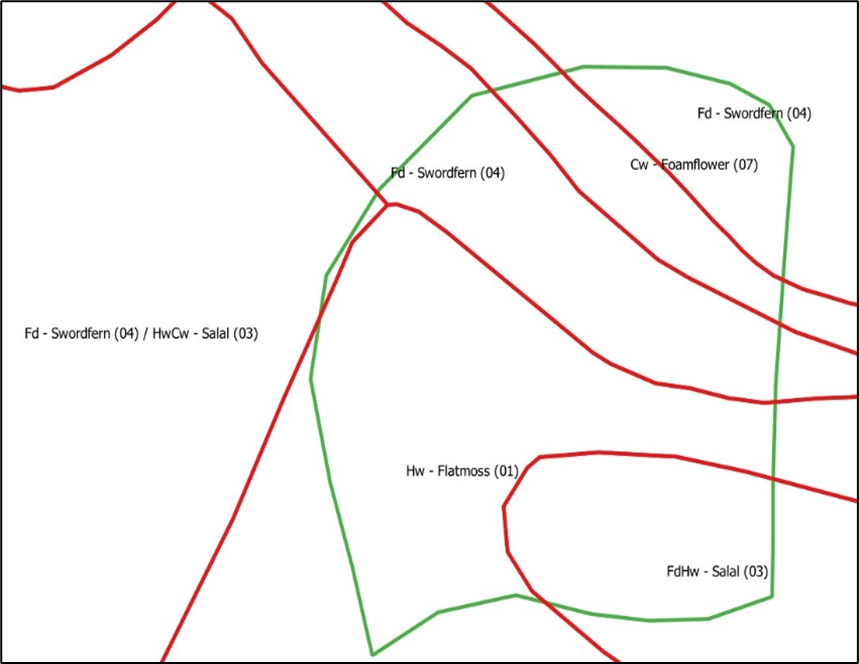

Exercise 7: Site Productivity and Density Measures
Background & Overview
To forecast the growth and yield of any stand, a measure of site productivity or site classification is needed. Also, for stand-level GY models, a stand-level competition measure is needed, and for tree-level GY models, tree-level competition measures are needed. There are alternative ways that we classify sites by productivity. In BC, the commonly used ones are:
Site index (a measure based on actual productivity)
The BEC system (classification of what a site might do)
A hybrid of these two called SIBEC.
For stand-level competition measures, we use crown closure, basal area per ha, and stems per ha (termed “density”) most commonly, but there are other measures including stand density index (SDI) and Curtis’ RD. For tree-level competition measures, we use distance-independent measures, such as basal area of larger trees (BAL) in PrognosisBC, or distance-dependent measures called competition indices (CIs) using the sizes and distances between trees, as measures of the competitive position of each tree.
Learning Objectives
To become more familiar with site productivity measures and classification systems used in BC.
To be able to calculate competition measures and interpret what these mean within and between stands.
Task 1 Site index, site series, and SIBEC
As noted, site productivity can be represented a number of ways. Site index of the leading species is commonly used. However, where there are no trees, or there is a mixed species forest, other options need to be considered.
SiteTools is a BC software package designed to:
calculate site index given site height and age for the leading (i.e., dominant) species
calulate a height versus age trajectory given the site index of a species.
SIBEC (i.e., SI from BEC site series) tables allow you to also estimate the site index given the site series, which can be used for stands with no trees. You will use SiteTools (software) and the SIBEC tables (EXCEL file and .pdf file) to answer a number of questions. SiteTools operates in a manner similar to VDYP and to TIPSY. However, before doing this exercise, go through the Site Tools quick description.docx file and repeat the example using Site Tools loaded on your desktop.
Using the Polygons from Exercise 6
| LY_ID | LBL_SPECIS | EST_SI_SPC | EST_SI (m) | CR_CLOSURE (%) | Shape_Ar (in ha) |
|---|---|---|---|---|---|
| 611 | CwHw(Fd) | CW | 20 | 65 | 11.1 |
| 621 | CwHw(Fd) | CW | 21 | 65 | 2.1 |
| 622 | CwHw(Fd) | CW | 18 | 70 | 7.1 |
Question 1
Use Site Tools to obtain a height trajectory (height over age table) for the top height trees of this stand from 10 to 250 years breast height age.
Graph this trajectory.
Is this a very productive stand? Remember the site index indicates that the average of the best (i.e., top height for BC SI curves) trees is 21 m for CW at 50 years old (breast height age). Also, consider how tall the top height is expected to be at 250 years old (breast height age).
What would the estimated top height be 10 years from now in 2023 for this stand? NOTE: The PROJ_Age = 218 years as of 2014, the Reference Date).
Based on what you know about this type of stand, is it likely that the stand would survive to 2033?
Use Site Tools to obtain a height trajectory (height over age table) for the top height trees of this stand from 10 to 250 years breast height age. Graph this trajectory.
Question 2
You have two primarily Coastal Douglas-fir (Pseudotsuga menziesii var. menziesii) stands growing in the CWH BEC zone. Stand #1 is currently 70 years old (breast height age) with a top height of 30 m and Stand #2 is currently 50 years old (breast height age) with a top height of 35 m.
- Use Site Tools to get the site index for each stand.
- Which stand is more productive based on site index (i.e., higher site index)?
- What other attributes would you need on each stand to forecast them using VDYP 7? Also, what would these be called (i.e., the variable labels) in the VRI attributes? HINT: What variables did you use in Exercise 6 to forecast stands using VDYP and where they called in the VRI attribute file? You also have 2014_VRI_Photo_Interpretation_Procedures_Ver30_final.pdf with details on each attribute.
Question 3
In Exercise 6, the site index values for the three polygons were for western redcedar (CW) as the dominant species. However, post-harvest, you simulated the yields after planting 1600 stems/ha of coastal Douglas-fir (FD). For that, you had to decide on what site index to use for the coastal Douglas fir post-harvest (e.g., same as for CW?). Alternatively, you could have used SIBEC relationships to get SI estimates for the post-harvest coastal Douglas fir given the BEC site series (see sibec2013approx_final.xlsx).
Using QGIS, the VRI 2014 and the BEC layers were loaded for MKRF. Then, a query was used to locate the three stands from Ex. 6. Since VRI polygons are delineated based on the current forest that is on site, whereas BEC is the vegetation that could be on the site, the forest cover and site series polygons do not have the same boundaries. As a result, one VRI stand may include several BEC site series/site association polygons.
For the smallest of the three stands from Ex. 6, POLYID=621 (shown in green in Fig. 1), the BEC polygons were then overlaid onto this VRI forest cover polygon (shown in red in Fig. 1). Three of these BEC site series/site association polygons that overlap with POLYID=621 have been highlighted (label is circled in black).

Using one of these site series/site associations within this VRI 2014 polygon, the FdHw-Salal (03) site series/site association within the CWHdm BEC subzone (Vancouver Region), and the SIBEC table in EXCEL:
List the estimated SI index values for each species given in the SIBEC table for this site series/site association in a table;
Add both the common and the full Latin names for each tree species (includes the credit for the person who named the species); and
Include the number of plots on which these estimated SI from BEC values are based. A blank in this cell means there were no plots and these SI values are estimated from a similar site series/site association.
- NOTE: This is the Vancouver region. ii) See the file, VRI_Ground_Sampling_species codes only_2017.pdf under for the VRI species codes. iii) You will need to use the internet to find whom to credit for each Latin name – try looking for “Silvics of North America” on the internet for these (excellent source!). iv) Finally, for coastal Douglas-fir or for coastal lodgepole pine, include the variety in the Latin name, since the variety of each of these species greatly changes growth characteristics.
Repeat this using the other two circled site series/site associations that overlap with this VRI polygon.
How reliable are these SIBEC estimates? Consider: What information was included in these tables that might indicate reliability?
How would using these SIBEC estimates for FD SI change the forecast you did using TIPSY for this stand in Exercise 6 (i.e., instead of using the VRI 2014 CW SI=21 for this polygon)?
Briefly explain how the yields would change depending on what you assumed for the FD SI post-harvest.
Then, which would you choose to use? Or would you use more than one approach? Justify your choice.
Task 2 - Density & Competition Measures
Competition among trees can be measured at a stand-level (or plot-level) or at a tree-level as noted. If competition for resources is very high, then competition-based mortality rates will be high as trees compete for available resources.
Question 4
| Tree No. | DBH (cm) | SPHtree | Ba/Tree(m2) | Bahatree (m2/ha) |
|---|---|---|---|---|
| 1 | 40.3 | 62.7 | 0.1276 | 8.0 |
| 2 | 45.0 | 50.3 | 0.1590 | 8.0 |
| 3 | 22.7 | 197.7 | 0.0405 | 8.0 |
| 4 | 50.1 | 40.6 | 0.1971 | 8.0 |
| 5 | 10.9 | 857.3 | 0.0093 | 8.0 |
Was this a fixed-area or a variable radius plot? Explain.
If this was a fixed-area plot, what was the plot size (ha)? If this was a variable radius plot, what was the BAF (m2/ha)? Explain.
Calculate the quadratic mean DBH (cm; often labelled as qDBH or as Dq or as Dg) for this plot.
Calculate Curtis’ RD for this plot.
For each tree, calculate the basal area of larger trees (BAL; sum of bahatree for all trees larger than this tree). Which tree is under the highest competition? Lowest competition?
Question 4
Stand #1 has 60 m2/ha of basal area and 1000 stems/ha. Stand #2 has 75 m2/ha of basal area and 400 stems/ha.
Using a fixed-area plot of 0.01 ha in each of these stands, how many “in” trees would you expect to get in each plot, on average? Show the calculations you used to support your answer.
If a variable-radius plot using a BAF of 4 m2/ha was used in each of these stands, how many “in” trees would you expect to get in each plot, on average? Support your answer with any calculations.
Calculate the quadratic mean DBH (cm; often labelled as qDBH or as Dq or as Dg) for each stand.
Calculate Curtis’ RD for each of these two stands.
Based on the stems/ha (aka stand density) which stand appears to have higher competition? What about using basal area/ha? Finally, based on Curtis’ RD, which stand has higher competition? Which one of these three measures is a better measure of the stand competition and explain why briefly?
Lab Questions & Deliverables
- Complete answers for four questions (all parts)
- all graphs and tables have captions and proper units
Summary
In this lab we introduced SIBEC as a method to estimate site productivity and site classification. We also introduced calculating tree-level competition